BEYOND THE ORDINARY.
DISCOVER THE PHILIPPINES
Denmark's premier boutique travel concierge — crafting bespoke 4 & 5-star island hopping journeys, private outrigger banca charters, and authentic out-of-the-beaten-track cultural experiences across 7,641 islands.
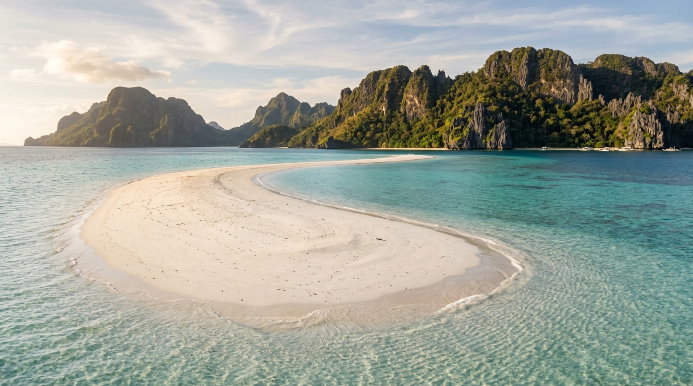
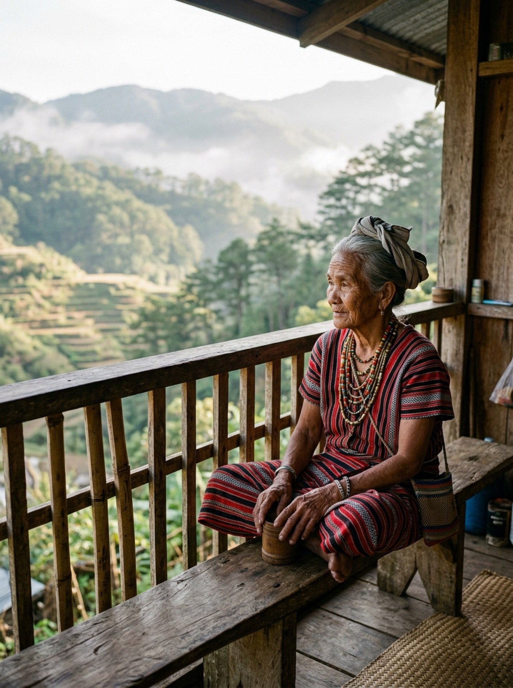
SAGADA & THE IFUGAOEN TRADITIONS
Far beyond the coastal trails, the northern highlands preserve two millennia of living agricultural wisdom. We facilitate private guided walks through Sagada’s pine-clad burial cliffs, private access to master inabel textile weavers, and mountain lodge hospitality curated for discerning European cultural travelers.
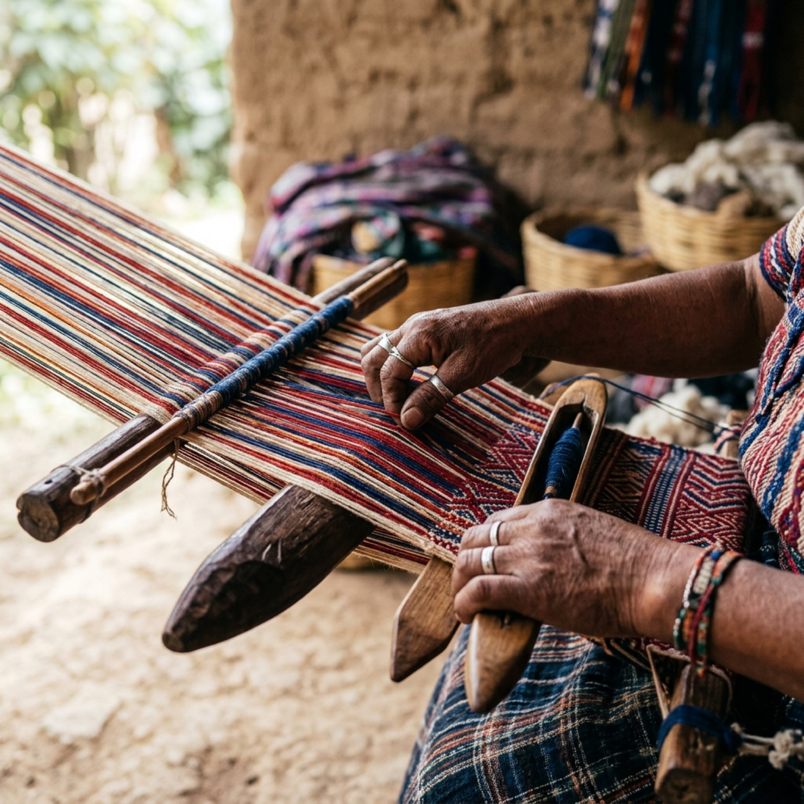
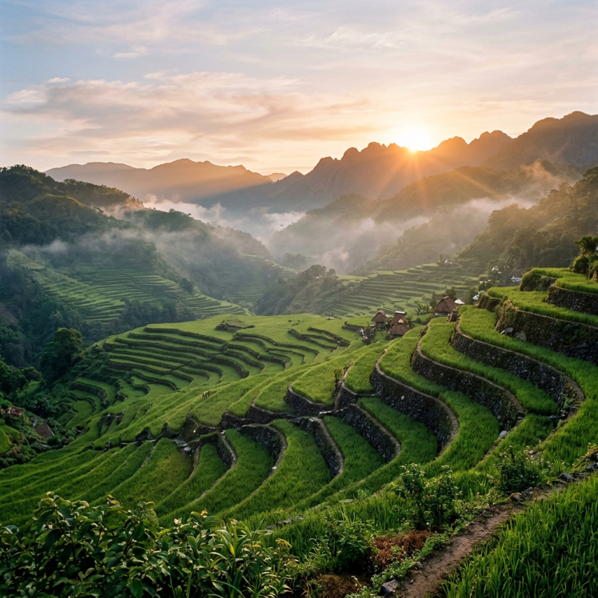
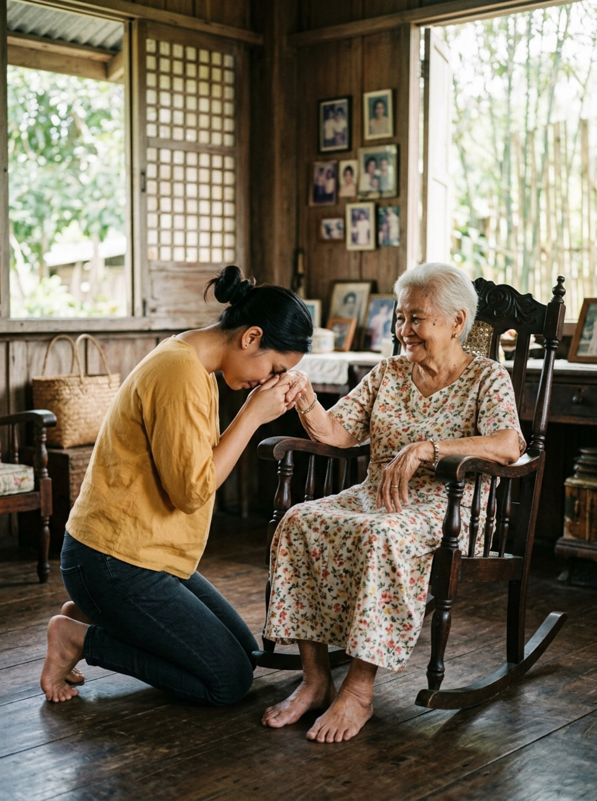
MANO PO & BAYANIHAN
In the Philippines, service is not an exercise in protocol; it is an instinctive act of kinship (Kapwa). The timeless gesture of Mano—touching an elder’s hand to one's forehead in silent reverence—reflects the respect and familial care that shapes every host interaction.
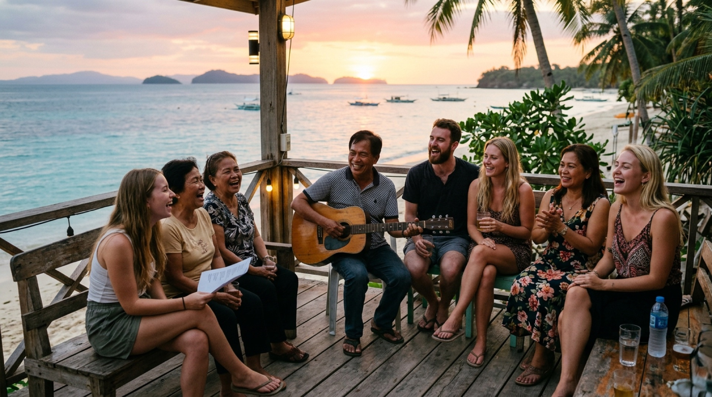
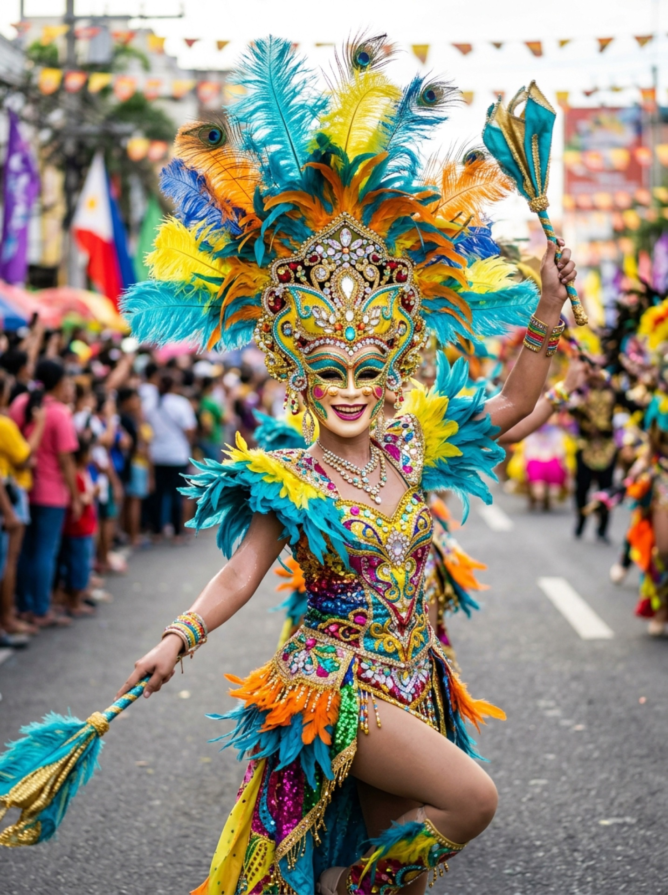
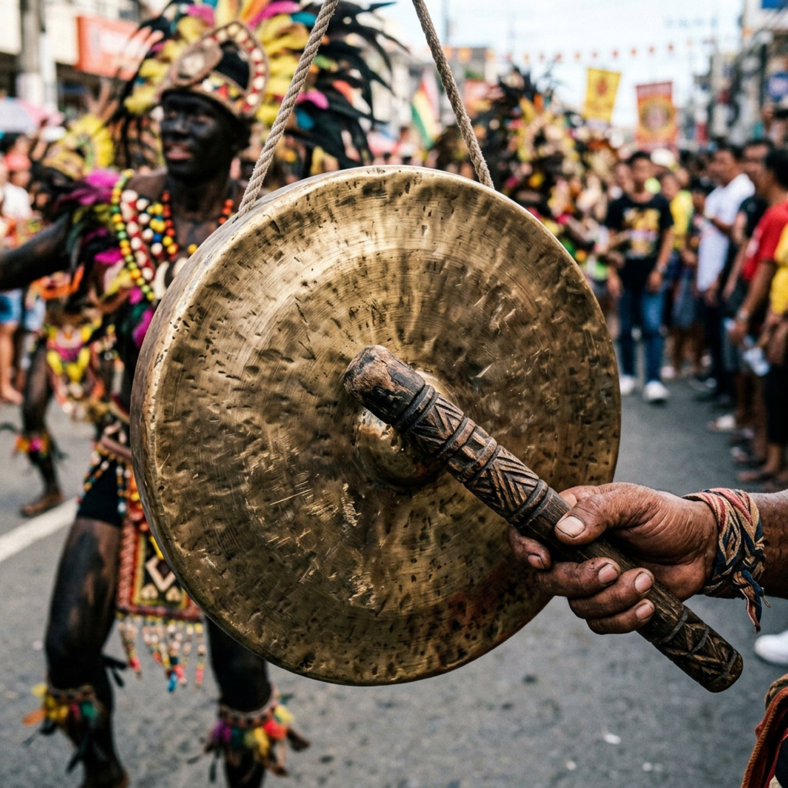
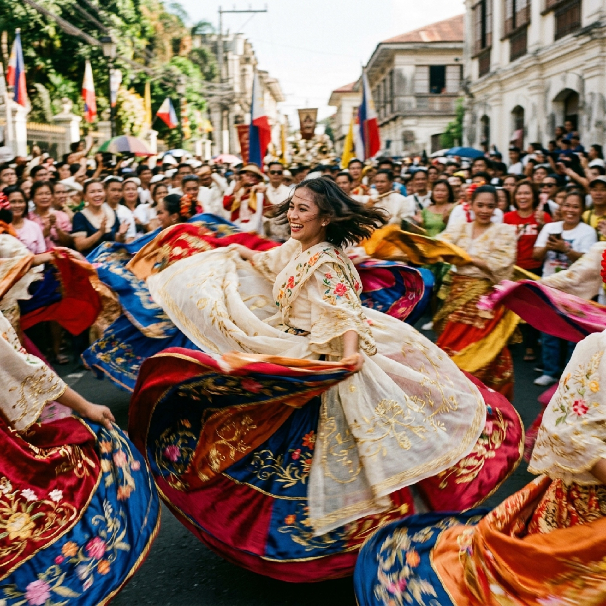
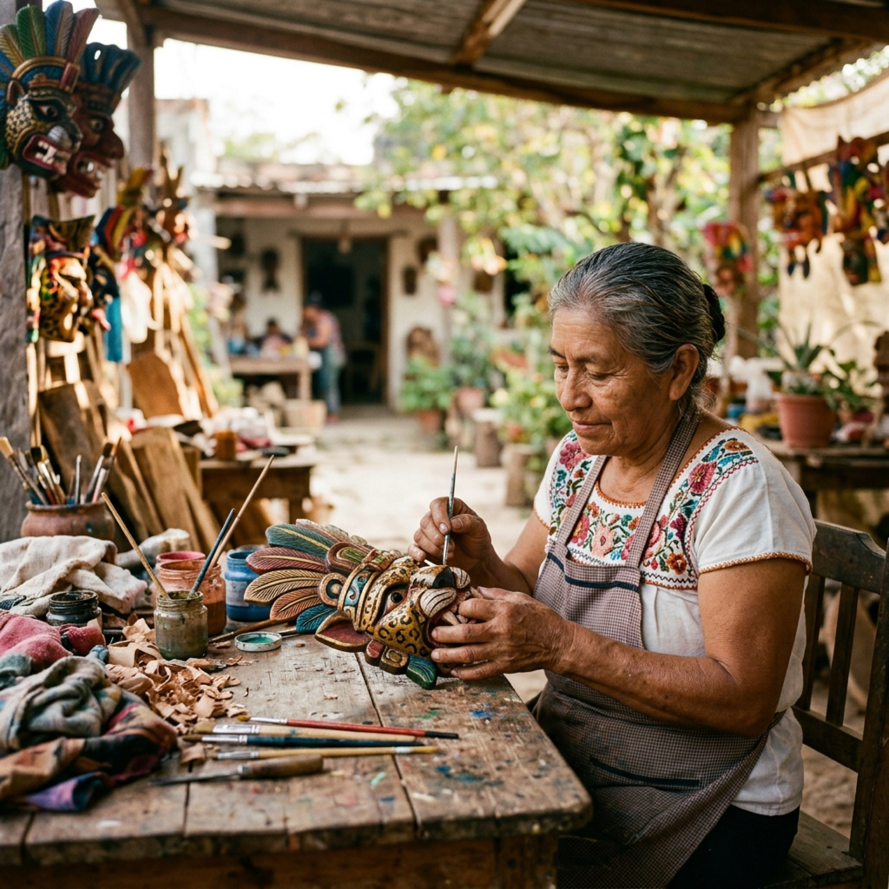
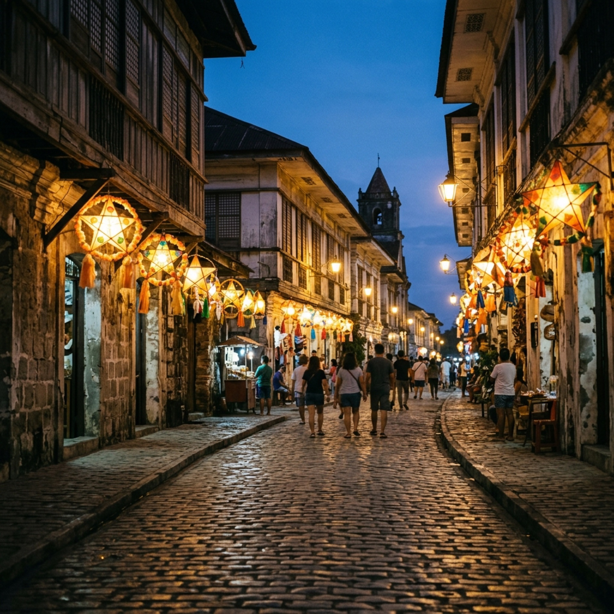
FIESTAS & KINETIC PAGEANTRY
From the iridescent feathered masks of MassKara in Bacolod to the drumming processions of Sinulog in Cebu, the country's festivals are unmatched cultural spectacles. Pandora Travel secures air-conditioned private suites and VIP grandstand seating.